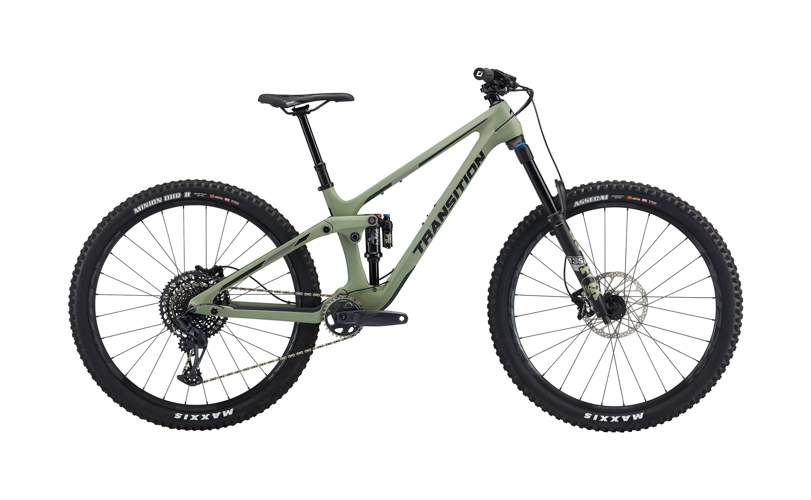

Transition es una marca americana especializada en bicis de descenso y enduro, fundada en 2003.
Transition Sentinel

Precio: $5.299.00
Bicicleta de enduro con geometría moderna y 160mm de recorrido.

Transition es una marca americana especializada en bicis de descenso y enduro, fundada en 2003.

Bicicleta de enduro con geometría moderna y 160mm de recorrido.